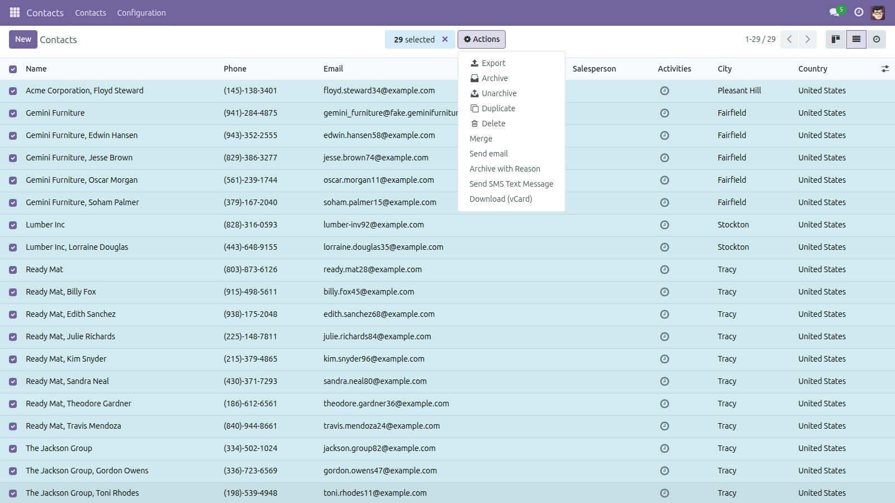
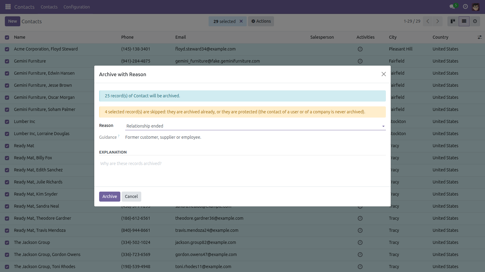
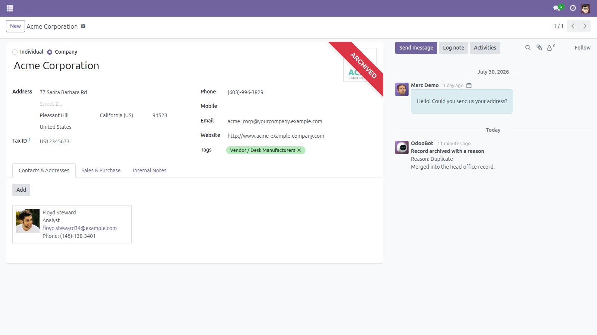
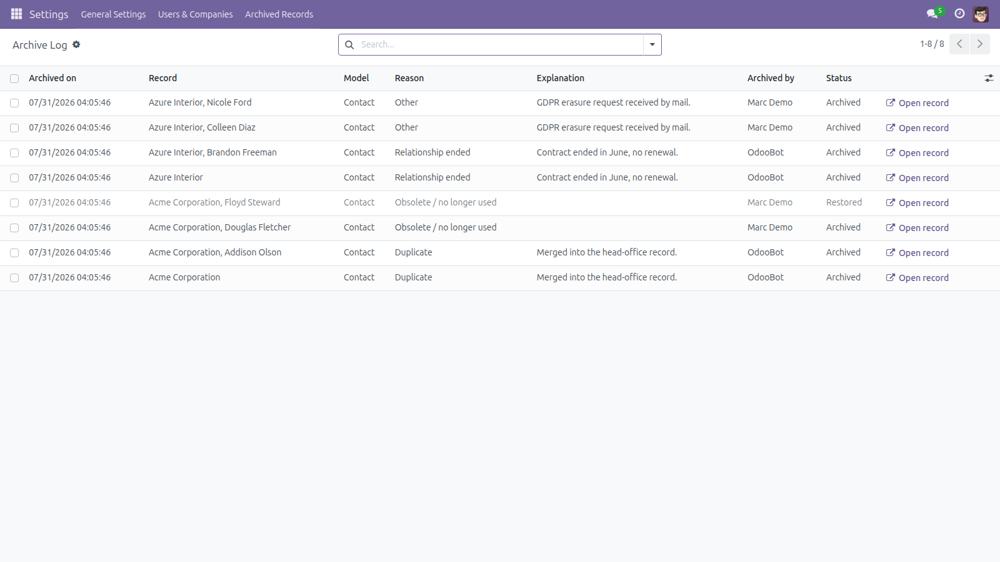
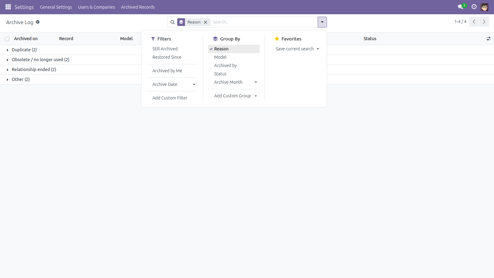
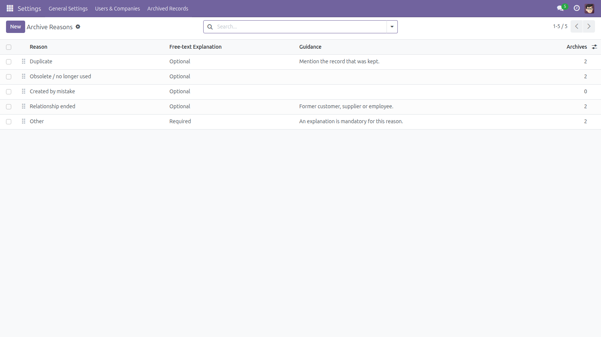

Archive with a Reason
Nobody ever writes down why a record was archived. Now they do.
Archiving hides a record from everyone with one click, and Odoo keeps no trace of why. Six months later, "why is this customer archived?" has no answer anywhere in the database. This module adds Archive with Reason to the Action menu: pick the records, choose a reason from a list you configure, add an explanation when the reason asks for one, and the reason is stored on each record, posted once in its chatter and written to a searchable log.
Free and open source (LGPL-3), Odoo 14.0 through 19.0.
- Reasons you control — order them, restrict a reason to specific models, and decide per reason whether a written explanation is optional, required or not allowed.
- One note per record — the chatter gets a single note with the reason and the explanation; who and when come from the message itself.
- A real report — Archive Log lists what was archived, by whom, when and why, filterable and groupable by reason, model, author, status and month, and exportable.
- Restores are tracked — unarchiving a record clears the reason from the record and marks its log entry Restored, with the date and the user. The log is the source of truth, so it closes correctly even if the record's own reason column was wiped by an import or a script.
- Safe by default — see "What is never touched" below.
- Batch safe — every record is archived in its own savepoint, so one record that refuses to archive never aborts the rest; the result tells you how many failed and why. Up to 500 records per run, refused with a clear message beyond that rather than timing out halfway through.
- Tamper-resistant log — ordinary users can archive and read back their own entries, but cannot create, edit or delete log rows by any other route.
What is never touched
res.users, res.company and every technical ir.* model are refused outright — the wizard will not even open on them.- In a contact selection, the contact of a user and the contact of a company are excluded automatically, so a company can never lose its own partner record. The dialog tells you how many records were skipped.
- Models without an Archived flag, or without a chatter, are refused with a message that says which of the two is missing.
- Records that are already archived are skipped, not re-archived.
- Nothing is ever deleted. The module only sets the standard
active flag to false.
Screenshots

Select the records, then Action > Archive with Reason — right next to Odoo’s own Archive.

One dialog: how many records will really be archived, how many are skipped and why, the reason, its guidance text and the free-text explanation.

The record keeps its own explanation: one chatter note with the reason and the free text, stamped with the author and the moment.

The Archive Log: record, model, reason, explanation, author, date and status — the greyed line came back from the archive.

Filter on still archived, restored, archived by me or a date range; group by reason, model, author, status or month.

Your reason list, with the explanation policy per reason and a live count of how often each one was used.
How it relates to "Archive Audit Trail"
My other free module, Archive Audit Trail, posts a short chatter note on every archive and restore, wherever it happens — no reason, no configuration. This module is the richer, deliberate path: it asks for a reason and produces a report, but only for archives done through its own dialog.
They are designed to be installed together. When both are present, an archive made through this wizard posts one note — the detailed one — and never two: this module suppresses the plain note for that single write. Archives made anywhere else are still logged by Archive Audit Trail exactly as before. Neither module needs the other; install either one alone if you prefer.
Installation
- Copy the module into your addons path and update the Apps list.
- Open Apps, search for Archive with a Reason and click Install.
- Only the standard
mail module is required.
Configuration
- Go to Settings > Archived Records > Archive Reasons (visible to Settings administrators).
- Five reasons are installed to get you started. Edit them, reorder them, or add your own.
- For each reason, set Free-text Explanation to Optional, Required or Not allowed, and optionally a short Guidance line shown in the dialog.
- Use Limit to Models if a reason only makes sense on some models; leave it empty to offer it everywhere.
- At install, the Action-menu entry is added to every installed model that has an Archived flag and a chatter. After you install new apps, run Settings > Archived Records > Update Action Menus once so the new models get the entry too.
Usage
- Open any list (Contacts, Products, Employees…) and tick the records to archive.
- Choose Action > Archive with Reason.
- Pick a reason, type the explanation if the reason asks for one, and press Archive.
- Read the confirmation: how many were archived, how many were skipped, how many failed.
- Open Settings > Archived Records > Archive Log to search the history, or the record’s chatter to read the reason in place.
- Restore a record the usual way (Action > Unarchive): the reason is cleared from the record and its log entry becomes Restored.
Good to know / limitations
- Only archives made through this dialog carry a reason and appear in the log. Archiving from the standard Archive button records nothing here, by design — the module never forces a reason on you.
- Two plain text columns (
archive_reason, archive_reason_note) are added to every model that has a chatter. Text on purpose: a relational field would add a foreign key to each of those tables, and PostgreSQL validates a new foreign key with a full table scan under an exclusive lock — an unpleasant surprise on a large account_move or sale_order. The columns are not added to any existing form view; add them yourself if you want the reason on a form, or read it in the chatter and in the log, where the relational history lives.
- The chatter note is best effort. If it cannot be posted — most often because the user’s own account has no email address, which stops any Odoo chatter post — the record is still archived and logged, and the result tells you how many notes were missed.
- The Action-menu entry is created per model at install time and removed again on uninstall. Models that arrive later (new apps) need the one-click Update Action Menus described above. The entry is offered to all internal users, but Odoo’s own access rights still apply: a record you cannot write is refused, reported individually, and never blocks the rest of the batch.
- The Archive Log and the reason list are for Settings administrators. Ordinary users can archive with a reason and read their own log entries; they cannot create, edit or delete log rows by any other route. Settings administrators can delete log rows — the module does not claim to make history immutable.
- The log stores the record’s name as it was at archive time, so the history stays readable even if the record is later renamed or deleted. That also means archiving contacts copies personal names into a second table — worth knowing if you have a data-retention policy.
Version notes
Identical behaviour on every supported series (14.0 – 19.0); only the view syntax differs between them.
License: LGPL-3 · Source on GitHub · Issues and contributions welcome.